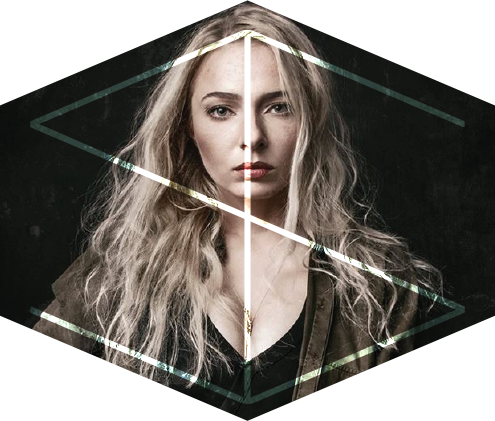

Ilona, dar kitaip ILFO, tai jauna perspektyvi fotografė, studijuojanti grafinių komunikacijų dizainą ir kaip ji juokauja - laisvalaikiu verčianti vandenį į vyną. Kai pirmą kartą su ja susipažinau pagalvojau, jei tavo nuotraukos tokios geros kaip ir humoro jausmas, eisi toli. O ji ir eina, sukasi lyg amžinas variklis. Susipažinkite – Ilona!
Papasakok apie pirmąją savo pažintį su fotoaparatu.
Vargu ar nuo mano istorijos saldumo kam nors suliptų sėdimoji, kaip dažniausiai būna, kai fotografas pradeda pasakoti apie atsitiktinai rastą senelio Zenit‘ą, kuris atseit jį – ketverių metų pienburnį, pastūmėjo domėtis fotografija. Mano atveju, prieš 10 metų, sesei vykstant pusmečiui studijuoti į užsienį, tėvai jai nupirko „Pentax“ sisteminį fotoaparatą. Sugrįžus sesei, grįžo ir fotoaparatas.
Tu studijavai fotografiją, kas paskatino pasirinkti šias studijas?
Tiesą sakant, baigus mokyklą planavau stotį visai ne į menus, o į anglų filologiją arba filosofiją, bet kadangi su istorija man sekėsi ne ką geriau nei lietuviams Eurovizijoje – per pirmąjį turą kur norėjau neįstojau, kitame – dėl viso pikto pirmuoju skaičiumi įrašiau fotografijos technologijas. Pagalvojau, kodėl ne?
Kaip sekėsi studijuoti, ką tau suteikė fotografijos mokslai?
Po pirmojo semestro iš šešių disciplinų turėdama penkias skolas, buvau pasiryžusi mesti studijas. Gavau velnių nuo tėvų, teko susigriebti. Fotografijos studijos suteikė pakankamai žinių, norint dirbti pagal specialybę ir galimybę atlikti darbo praktiką pasirinktoje įstaigoje. Mano atveju – Lietuvos Respublikos Seime. Nors dabar galiu teigti, kad tik nuo paties žmogaus priklauso, ar jis dirbs toliau pagal įgytą specialybę, dauguma mano bendrakursių baigę studijas fotografais nedirba. Gal ir gerai (juokiasi).
Ar studijų kokybė tenkino, kas patiko, o kas nuvylė?
Kokybė pranoko visus lūkesčius, kadangi fotografijos technologijų studijų programa, kaip vėliau paaiškėjo, nėra viena lengviausių, lyginant su kitų meninių sričių programomis, kas mane asmeniškai pradžiugino, nes pasirašant stojimo dokumentus kilo įtarimų jog per ateinančius tris metus protiškai degraduosiu... Tarp dėstomų dalykų, daugelio nuostabai, buvo taikomoji fizika, fotoprocesų teorija (chemija) bei teisė ir ekonomika, kurių „nekalant“, melskis kiek nori – „nepraslysi“. Kalbant apie nusivylimą – tikrai nepradžiugino faktas, kad po mokyklos baigimo, kūno kultūrą turėsiu lankyti dar dvejus metus. Nors turint omenyje kiek kartų buvau nuėjusi į šią paskaitą... Na, tiesiog gėda skųstis (juokiasi).
Kas tave paskatino vietoj įprastų magistro studijų, jau įgijus pirmosios pakopos aukštąjį išsilavinimą, pasirinkti antras bakalauro studijas – grafikos dizainą?
Visų pirma, kad būtų galimybė pasirinkti magistro studijas, reikėtų išlyginamųjų studijų. Visų antra, magistras turi būti aktualus. Fotografams, iš patirties kalbant, darbą susirasti jis vargu ar padeda. Viską lemia patirtis, nuveikti darbai bei per kruviną prakaitą sukaupti kontaktai. Kalbant apie grafikos dizaino bakalaurą – tai dar vienas būdas plėsti profesionaliai teikiamų paslaugų spektrą bei tuo pačiu, dirbant ties projektais, gaišti mažiau laiko besitariant su kitais žmonėmis.
Kaip jautiesi ir vėl būdama pirmakursė, tačiau su didžiuliu bagažu patirties?
Vis dažniau apima motiniški instinktai. Juokauju. O jei rimtai, patirtis, kaip žinoma, suteikia pasitikėjimo savimi bei ramybės jausmą.
Kaip manai, svajonių darbas tavęs laukia ateityje, ar tu jį jau turi?
My dream job, is not needing one (juokiasi). Kažkada manęs paklausė, kada paskutinį kartą nuoširdžiai jaučiausi laiminga, atsakiau – tada, kai to nevertinau. Todėl darau išvadą, kad tikėtina jog ir dabar esu laiminga.
Tu fotografuoji seime, fotografuoji vestuves, atlieki privačias fotosesijas, o ką fotografuoti mėgsti labiausiai?
Daugiausia prasmės įžvelgiu reportažinėje fotografijoje. Mados ar kita meninė fotografija yra aktuali tik tam tikrą laiką, o užfiksuoti politiniai ar kultūriniai įvykiai – jau istorija. Be to, reportažinė fotografija įdomi tuo, kad suteikia galimybę spręsti iš detalių, matomų nuotraukose, kurias dėliojant atsiveria išsamesnis istorijos vaizdas — įvairių, galbūt iš pirmo žvilgsnio nereikšmingų, detalių tarpusavio ryšis, kuris ir darė įtaką tolimesniajai įvykių sekai.
Tu labai įvairiapusiškas žmogus, sugebi ne tik fotografuoti, bet ir paruošti žmones fotosesijai, padaryti makiažą, aprengti, ar šių dienų fotografas privalo mokėti daugiau nei vieną amatą nes neišgyvens?
Neprivalo, manau, tai priklauso nuo paties žmogaus ar jam reikia kitų specializacijų ir ar jis nori tobulėti ne tik savo profesijos ribose. Man, asmeniškai – reikia, nes mėgstu kontroliuoti visą darbo procesą nuo pat pradžios iki pabaigos.
Kaip šiais laikais gyvena fotografai, papasakok kokia tavo diena?
Kaip ir kiekvienas ožio metais gimęs intravertas vėžys, dieną pradedu poros valandų savigraužos terapija. Jei nėra numatytų fotosesijų, pasidarius kavos bandau prisiversti tvarkyti nuotraukas ir galiausiai, einu miegoti peržiūrėjusi 2 sezonus „Sostų karų“ (orig. k. Games of Thrones) (juokiasi).
O jei rimtai, diena priklauso nuo darbotvarkės ir nuo paties fotografo poreikių. Jei dienos metu nėra numatytų fotosesijų – tvarkau nuotraukas, atsakinėju į klientų pranešimus, einu į susitikimus, paskaitas, pasportuoti į salę, skaitau knygą arba žiūriu kokį nors kvailą serialą.
Turbūt žinai, ką reiškia tas jausmas, kai mūza apleidžia, gal turi savų būdų kaip ją prisikviesti?
Abejoju ar man išvis pažįstamas tas jausmas, kai mūza ateina (juokiasi). Reikia dirbti – dirbu. Negaliu sau leisti sakyti: „atsiprašau, nėra nuotaikos, svorio priaugau“. Tai yra tik mano asmeninės problemos.
Kas tave įkvepia dirbti, kurti ir nesustoti?
Būtų kvaila nepaminėti Lietuvos Respublikos Seimo fotografės Olgos Posaškovos ir jos vyro Eltos fotografo Martyno Ambrazo. Vargu ar rasčiau geresnį pavyzdį kaip derinti profesionalumą ir žmogiškumą. Jei ne jie, abejoju ar man laikui bėgant būtų atsiradęs tas vadinamas „pašaukimas“ ir nenumaldomas noras vystytis kaip specialistei. Dar kvailiau būtų nepaminėti jų humoro jausmo.
Fotografuoji jau ilgai, kokie tavo pasiekimai, ką jau spėjai nuveikti?
Dar neturiu kuo girtis, nebent savo mamai. Galėčiau paminėti, kad mano nuotraukos dvejus metus iš eilės yra atrenkamos Lietuvos spaudos fotografijos leidiniui, praeitais metais buvau nominuota auksiniam kadrui, Lietuvos Respublikos Seime buvo atidaryta mano bei Olgos Posaškovos ir Inesos Čekolis-Ščiočinos nuotraukų paroda, praeitais metais vedžiau nuotraukų redagavimų mokymus Kaune, šiais metais vesiu paskaitą bei workshop‘a rugsėjį Nidoje vykstančioje suaugusiųjų foto-stovykloje, kurią organizuoja Tomas Tumalovičius. Trumpai tariant, ačiū Dievui, vis dažniau samdo rimtesniems projektams, tad nuobodžiauti nėra laiko.
Ką galėtum patarti pradedančiajam fotografui?
Skambės banaliai, bet viską reikia daryti iš širdies – tai, kad jaudiniesi jei kažkas nepavyksta ar gauni kritikos yra normalu. Patarčiau labai daug dirbti, tik ,žinoma, ne per daug, nes per daug yra nesveika, nelipti per galvas – lengviausias kelias ne visada naudingiausias sprendimas. Kaip kažkada yra pasakęs Martynas Ambrazas: „Jei nori būti geras fotografas, turi būti geras žmogus. Blogi žmonės gerais fotografais nebūna. Reikia mylėti žmones. Tie, kurie iškyla – tie gerai fotografuoja, reiškia, jie geri žmonės.“ Kitas patarimas – nesusireikšminti. Kaip kažkada sakiau, net ir Didžiosios Britanijos karalienė, atsikėlusi iš savo prašmatniųjų patalų, ryte eina į toletą... (juokiasi)O pradėti reikėtų nuo praktikos ir užsakymų. Milijoną kartų būsi sukritikuotas ir likęs be apmokėjimo – tačiau „gavęs daug reklamos“. Laikui bėgant, nesąmoningai, net ir niekur nesimokęs psichologijos, gebėsi perprasti žmonių elgesį ir bendravimo subtilumus, taip po truputį bręsi ir kaip specialistas, ir kaip asmenybė.